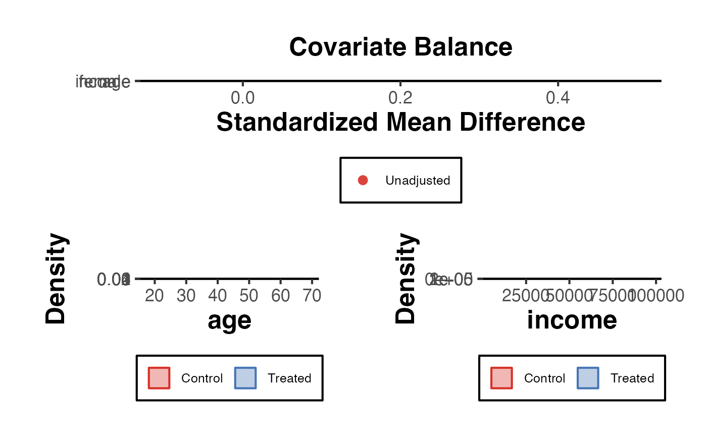

Comprehensive Balance Plot Suite
balance_plot.RdProduces a multi-panel diagnostic figure comparing covariate distributions between treatment and control groups. Combines a standardized mean difference (SMD) dot plot, density overlays, and (optionally) a variance ratio panel. Useful for assessing balance before and after matching or weighting.
Usage
balance_plot(
data,
treatment,
covariates = NULL,
data_adj = NULL,
weights = NULL,
threshold = 0.1,
var_labels = NULL,
show_density = TRUE,
show_variance_ratio = FALSE,
title = "Covariate Balance"
)Arguments
- data
A data frame.
- treatment
Character. Name of the binary treatment variable (0/1).
- covariates
Character vector. Names of covariates to plot. Defaults to all numeric variables except
treatment.- data_adj
A second data frame (e.g., post-matching) to overlay as "adjusted" estimates. Optional.
- weights
Numeric vector. Case weights for the adjusted sample (alternative to
data_adj). Length must equalnrow(data).- threshold
Numeric. SMD threshold line. Default
0.1.- var_labels
Named character vector. Display names for covariates.
- show_density
Logical. Add density overlay panels. Default
TRUE.- show_variance_ratio
Logical. Add variance ratio panel. Default
FALSE.- title
Character. Overall plot title.
Examples
set.seed(42)
n <- 300
df <- data.frame(
treat = rbinom(n, 1, 0.5),
age = rnorm(n, 40, 10),
income = rnorm(n, 50000, 15000),
female = rbinom(n, 1, 0.5)
)
# Introduce imbalance
df$age[df$treat == 1] <- df$age[df$treat == 1] + 5
balance_plot(df, treatment = "treat",
covariates = c("age", "income", "female"))
